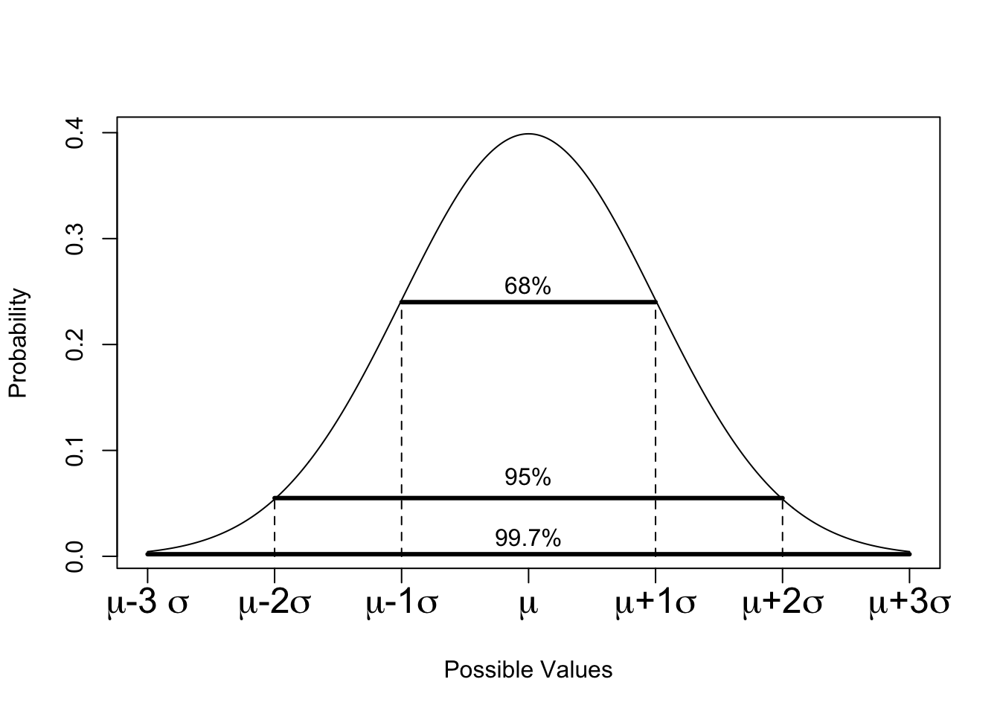

mu <- 162.3
sig <- 7.11
xseq <- seq(mu-3*sig, mu + 3*sig, length.out = 300)
yseq <- dnorm(x = xseq, mean = mu, sd = sig)
plot(xseq, yseq, type = "l",
main = "Heights of Canadian Women",
xlab = "Height (cm)", ylab = "Prob. Density")7 The Normal Distributions
7.1 Introduction
In this lecture we are looking at continuous distributions. Continuous distributions have an odd quirk. If a variable has a continuous distribution, then \(P(X = x) = 0\). That is, the probability of any specific value is infinitely small.
Think of it this way: suppose that human heights go from 54 cm to 272 cm. For now, suppose all of these heights are equally likely. If we record heights to the nearest centimeter, there are 219 possible heights, so the probability that you are one of those heights is 1/219. If we round to the nearest mm, there are 21,900 different heights. As we get a more and more accurate measuring instrument, the probability of any given height goes to 0. It’s not that these heights are impossible, it’s that you’re probably not going to ever guess my exact height when we measure it with infinite accuracy.
So what do we do? How could we possibly calculate probabilities? Well, we measure ranges! You can’t guess my height exactly, but we can talk about the probability that my height is between 170 and 180 cm, or even the probability that my height would be 170, assuming we round to the nearest centimeter.
Some Facts about Distributions
Before we begin, the following properties are true of any distribution, regardless of whether they are discrete or continuous.
- All probabilities must be between 0 and 1.
- All probabilities together must make 1.
- For discrete, adding them all should get you to 1.
- For continuous, the area under the density curve must be 1.1
- If two events are disjoint, you must be able to add their probabilities.
- It’s weird, but we have to define this as a rule first before we can calculate probabilities.
The first point should be obvious, and you won’t ever need to check whether the third point is true.
The second point is the important one: The total probability for all events must be 1. For continuous distributions like the normal distribution, that means that the area under the curve is 1.2
7.2 The Normal Distribution
The normal distribution is a way to define the probability of something using a function, but the function is complicated.3 Instead, we’ll jump right into how to use it and let software deal with the function.
In the introduction, I used the example of people’s heights. I made the assumption that all heights were equally likely, but this is just a bonkers thing to say. Instead, some heights are more likely than other heights. Of course, this doesn’t mean that, say, 170 cm is very unlikely, but 175 is likely, then 176 is unlikely, then 177 is very unlikely, then 178 is suddenly really likely again; most people have heights close to the average and heights further from the average are less likely. This is exactly what the normal distribution is for! Here’s what the normal distribution looks like:
The plot above has the highest point occurs at exactly 162.3, which is the best number I could find for the actual average height of Canadian women. This is denoted \(\mu\). The width of the curve is a little trickier - how did I choose to make it go from 145 to 180? I could easily have stretched it out or squeezed it inwards in both directions. The width is defined by the standard deviation, which is denoted \(\sigma\). Because of the way the normal distribution is defined, there’s nothing else we can change about it - knowing \(\mu\) and \(\sigma\) are enough to draw the entire curve.
## Requires the "shiny" library
shiny::runGitHub(repo = "DBecker7/DB7_TeachingApps",
subdir = "Tools/normShape")If we have a variable \(X\) that follows a normal distribution, we use the notation \(X \sim N(\mu, \sigma)\).
Warning
Some textbooks use the notation \(X \sim N(\mu, \sigma^2)\), i.e. they use \(\sigma^2\) rather than \(\sigma\). It’s like driving on the left or the right side of the road - both are fine, but we have to choose one and stick with it.
The idea that “most things are close to the center, and fewer things further away” can be very powerful. This applies to:
- Human heights
- Income for a given job position
- Change in stock price from day to day
- On average the change is 0, but it does change. Small changes are much more likely than large ones, but large ones do happen.
- Obviously, extreme events happen sometimes, and major changes can happen.
- IQ scores
- Birth weight
- How much the prediction of a model differs from the truth
7.3 Calculating Normal Probabilities - Part 1
The height and width of the normal distribution are determined by the mean (\(\mu\)) and standard deviation (\(\sigma\)), and only the mean and standard deviation. The mean just moves the curve left and right, the standard deviation squeezes or stretches it.
To highlight this, we introduce something called the Empirical Rule, a.k.a. the 68-95-99.5 Rule. No matter what the mean of the distribution is, 68% of the probability is within 1 standard deviation of the mean. To say this another way, let’s extend our notation slightly. If \(X\sim N(\mu,\sigma)\), we can say that:
\[\begin{align*} P(\mu - \sigma \le X \le \mu + \sigma) \approx 0.68 \end{align*}\]
To phrase this in another way, if we were to draw random numbers from the normal distribution, 68% of them would be between 1sd below the mean and 1sd above the mean.
set.seed(-4) # Ensure the same random numbers every time
## generate 10000 random N(0,1) values
x <- rnorm(n = 10000, mean = 0, sd = 1)
## You won't need to know how to write this code:
sum(x > -1 & x < 1) # x is larger than -1 AND less than 1[1] 6766So out of 10,000 random numbers from a N(0,1) distribution, 6,766 (67.66%) of them were above -1 but below 1. If we change the mean and sd, we still get the same results:
## Mean is 4, sd is 30, so mean - 1sd = 4 - 30
## Change the mean and sd for yourself to see what happens!
mu <- 4
sigma <- 30
x2 <- rnorm(n = 10000, mean = mu, sd = sigma)
sum(x2 > (mu - sigma) & x2 < (mu + sigma)) # Not exactly 68%, but approximate![1] 6845As you can guess from the name “68-95-99.7 Rule”, 68% being within one sd is only part of the story. The 95 refers to 95% being within 2sd of the mean, and the 99.7 refers to 99.7% being within 3sd of the mean.
sum(x > -2 & x < 2) # within 2sd of the mean[1] 9523sum(x > -3 & x < 3) # within 3[1] 9970## Try this with x2 as well!Some variant of the following image appears in countless textbooks:

As a small side note, the image above uses the word “data”. By this, it means that if this is the population, then 68% of all the data that it were possible to collect would be within one standard deviation of the mean. As we saw in the simulated data above, this number is almost never going to be perfect.
Trickier calculations
If 68% of the data is between \(\mu - \sigma\) and \(\mu + \sigma\), then there’s still 32% of the distribution outside this range. The normal distribution is symmetric, so this 32% gets split exactly in half and 16% of the distribution is below \(\mu - \sigma\), and 16% is above \(\mu + \sigma\).
Based on this calculation, we can say that 84% of any normal distribution is below \(\mu + \sigma\), and 84% is above \(\mu - \sigma\). Before we move on, draw out some normal distributions to convince yourself that 97.5% of any normal distribution is less than \(\mu + 2\sigma\).4
You should try the following calculations yourself, all of which can be done with basic arithmetic and the 68-95-99.7 Rule:
- Below \(\mu+2\sigma\) and above \(\mu-\sigma\).
- Below \(\mu+2\sigma\) and above \(\mu+\sigma\).
- Above \(\mu + 2\sigma\) and below \(\mu + 3\sigma\)
- Above \(\mu - 3\sigma\) and below 0.
7.4 The Standard Normal Distribution
We use a special letter (Z, pronounced “zed” because we’re Canadian) to denote a standard normal distribution. In particular, \(Z\sim N(0, 1)\) is a normal distribution with mean 0 and standard deviation 1. Many many many many textbooks have a table in the back of them that gives probabilities for the standard normal distribution, and they call them \(Z\) tables.
All normal distributions have the exact same shape. In order to change the mean and sd, we can simply re-write the numbers on the axes. If we want to shift the whole curve to the left by 2 units, we can re-label the numbers on the x axis. If we change the sd, the plot might get “taller” or “shorter”, but if we zoom in on the plot we can make it look exactly the same!5
Standardizing a Normal Distribution
Because they all look the same, we might as well work with just one of them! Suppose \(X\sim N(\mu,\sigma)\). If we shift the whole curve to the left, then the mean shifts as well and the mean is 0. In other words, \(X-\mu \sim N(0,\sigma)\). Now that the mean is at 0, \(\mu + 1\sigma\) is simply \(\sigma\), \(\mu-3\sigma\) is \(-3\sigma\), and so on. If we divide all of the numbers by \(\sigma\), then \(\sigma\) is simply 1, \(-3\sigma\) is simply -3, and so on. To formalize this, if \(x\sim N(\mu,\sigma)\), then
\[\begin{align*} \frac{X-\mu}{\sigma} = Z \sim N(0, 1) \end{align*}\]
This is called standardizing a normal distribution. The resultant value is called the z-score.
For example, suppose a woman is 155.19 cm tall. If the true mean height of Canadian women is 162.3 and the standard deviation is 7.11, then this particular woman is exactly one standard deviation below the mean. This is the z-score, a.k.a. the standardized value; this woman’s z-score is -1.
Now consider a woman who is 161.22 cm tall. Her z-score would be -0.152,6 meaning that she is 0.152 standard deviations below the mean.
Let’s return to the 155.19 cm tall woman. If you take a woman at random from the population, what is the probability that the randomly chosen woman be be shorter than 155.19 cm? Based on the 68-95-99.7 rule, 68% of women are within one standard deviation of the mean, which is a range from 155.19 to 169.41. Since 68% of the women are betwen these two numbers, 16% of them are shorter than 155.19 (it is also true that 16% are taller than 169.41, but this was not required for the question).
Now, what’s the probability that a randomly chosen woman is, say, shorter than 160 cm? This doesn’t fit nicely in the empirical rule, so we need another way to calculate probabilities. However, it’s worth stopping and trying to make a guess! The empirical rule tells us that 16% of women are below 155.19 cm, and we also know that 50% of women are shorter than the average of 162.3 cm (since the normal distribution is symmetric), so we expect that the answer is somewhere between 16% and 50%, probably closer to 50% since 160 cm is closer to 162.3 cm than it is to 155.19 cm.
7.5 Calculating Normal Probabilities - Part 2
In general, we use the cumulative distribution function (CDF, or cdf) to calculate probabilities. As with the cumulative probability tables we saw in the probability lectures, the cumulative probability calculates the area to the left of a particular point.7 Questions about the normal distribution generally come in three flavours:
- Find \(P(X \le a)\)
- Find \(P(X \ge b)\)
- Find \(P(c \le X\le d)\)
The cdf is defined as \(P(X\le x)\), which allows us to answer questions like 1. For the standard normal distribution, a table of Z probabilities can be found at the back of the textbook. I’ve added a file that demonstrates how to use the Z-table in the Lecture Materials. This is something that is crucial to know for closed-book tests since you will need to caclulate probabilities somehow, but we can’t let you have a computer to run R! Before moving on, read “Intro to Ztable.pdf”.
In that file, there are some practice problems. Below, you’ll find a selection of solutions using R. For your own practice, try and calculate them with the Z-table (with some good drawings) and verify your answer with R.
## 1. Find the probability of a z-value less than 1.11.
pnorm(1.11)[1] 0.8665005## 2. Find the probability of a z-value greater than 1.11
1 - pnorm(1.11)[1] 0.1334995## 3. Find the probability of a z-value greater than -2.01 but less than 1.
pnorm(1) - pnorm(-2.01)[1] 0.8191292## 4. Verify the empirical rule: 68-95-99.7
pnorm(1) - pnorm(-1)[1] 0.6826895pnorm(2) - pnorm(-2)[1] 0.9544997pnorm(3) - pnorm(-3)[1] 0.9973002For questions like \(P(X\ge x)\), we can simply use the fact that \(P(X \ge x) = 1 - P(X<x)\). Since this is a continuous distribution and \(P(X = x)=0\), we also know that \(P(X\le x) = P(X<x)\) and we can just use the cdf. The last one is a little bit trickier.
To calculate the probability that a randomly chosen value will be within a given range, there are a few steps. Let’s use the same example as the textbook: If \(X\sim N(-2, 1)\) find \(P(-2.5\le X\le -1)\). If we want to use the cdf, we need to re-write this in terms of \(P(X\le x)\).
Here’s how we do it. If we only find \(P(X\le-1)\), then we have taken too much of the distribution. Everything to the left of -2.5 was something that should not have been included. So why don’t we just remove it? By this logic, we can find \(P(-2.5\le X \le -1) = P(X\le -1) - P(X \le -2.5)\). This is shown graphically below:
Returning to the heights example, the probability of a randomly chosen woman being less than 160 cm can be calculated as: \[ \frac{x - \mu}{\sigma} = \frac{160 - 162.3}{7.11} = -0.323488045 \] We can now look up -0.323 with the pnorm function:
pnorm(-0.323488045)[1] 0.3731628Note that R will do the standardization for you if you ask it politely.
pnorm(q = 160, mean = 162.3, sd = 7.11)[1] 0.3731628I have created a shiny app that lets you explore these calculations8. Feel free to use this to answer the questions in this lecture, and then double check the answers with pnorm.
## install.packages("shiny") # Run this if you get an error about "package not found"
shiny::runGitHub(repo = "DB7-CourseNotes/TeachingApps",
subdir = "Tools/pnorm")Examples
Ex1: P(X < x)
- If X has a mean of 4 and a sd of 2, what’s the probability of a value less than 0?
- Solution 1: Standardize and Z-table. I’ll split this up into steps:
- Standardize: \((x-\mu)/\sigma = (0 - 4)/2 = -2\).
- Find -2 on the Z table: -2=-2.00, so this will be in the row labelled -2.0 and the column labelled 0.00,9 which is 0.0228.
- Conclude: 2.28% of the N(4,2) distribution is below 0.
- Solution 2: Empircal rule.
- Before calculating a normal probability, try and estimate how many standard deviations away from the mean the value is. In this case, 0 is 2 standard deviations from 4. The 68-95-99.7 rule states that 95% of the distribution is outside the range from \(\mu - 2\sigma\) to \(\mu + 2\sigma\), so 5% is outside of this range. This means that 2.5% is on either side, which means that 2.5% is below 0.
- Solution 1: Standardize and Z-table. I’ll split this up into steps:
A short version of Solution 2: By the 68-95-99.7 Rule, 95% is between 0 and 8. Therefore, 2.5% must be less than 0.
As you can see, the 68-95-99.7 rule is approximate. However, I highly recommend doing many practice problems with it. On a multiple choice question, if you can figure out the answer with the Empirical Rule than you might be able to guess the correct answer much quicker. You won’t get the exact answer, but if there’s only one answer that’s close to your guess, then that’s probably it.10
Solution 3: R.
## Standardize:
pnorm((0 - 4)/2)[1] 0.02275013## Same answer, without standardizing:
pnorm(q = 0, mean = 4, sd = 2)[1] 0.02275013- If \(X\sim N(1234, 56)\), what’s the probability of a number smaller than 1432.
Before we begin: What do we expect the number to be? The mean is 1234, which is smaller than 1432. Is it a little smaller, or is it a lot smaller? Compared to the standard deviation, it’s a lot smaller. By the empirical rule, the vast majority of the distribution is below \(\mu + 3\sigma\), which is approximately 1400.11 We should expect an answer close to 1, since the area under the normal distribution is 1.
Solution 1: \((x-\mu)/\sigma = (1432-1234)/56 = 3.54\), which is not on the Z table. When this happens (and we don’t have access to technology), we simply say the answer is 1.12
Solution 2: The value we’re interested in isn’t 1, 2, or 3 standard deviations from the mean, so the Empirical Rule doesn’t apply. However, we can guess that our probability will be close to 1 since it’s larger than 3 standard deviations away.
Solution 3: R.
pnorm(1432, mean = 1234, sd = 56)[1] 0.9997967Ideally, you would only ever use intuition from the Empirical rule, or use R. The Z-table is super convenient for written, in-person exams. It’s also nice for situations where you don’t have a computer with R available.
P(X > x)
- If X has a mean of 4 and a sd of 2, what’s the probability of a value greater than 0?
Before we start: Use the empirical rule! 0 is 2sd below the mean, so the answer should be close to 97.5%
With the Z table: \((x-\mu)/\sigma = -2\), and we’ve already found this on the table as 0.0228. Since we’re looking at the right tail, our answer is 1 - 0.0228 = 0.9772.
With R:
1 - pnorm(0, mean = 4, sd = 2)[1] 0.9772499- Suppose \(X\sim N(23, 23)\). What’s the probability of a value larger than 23?
Before we start: The normal distribution is perfectly symmetric, which we have learned means that the mean is equal to the median. The median marks the point where 50% of the distribution is smaller. So before doing any work, we know that the answer must be 50%
pnorm(23, 23, 23)[1] 0.5P(a < X < b)
- If \(X\sim N(0, 1)\), what’s the probability of a value between -1.52 and -0.5?
Solution 1: We have a standard normal value, so we can look these values up directly. P(Z < -1.52) = 0.064313 and P(Z < -0.5) = 0.3085.14 We want the area between these two values. P(Z < -0.5) contains everything from negative infinity to -0.5, but we only want values from -1.52 to -0.5. To fix this, we remove everything from negative infinity to -1.52. Our answer is 0.3085 - 0.0643 = 0.2442.
Solution 2: R.
pnorm(-0.5) - pnorm(-1.52)[1] 0.2442821I have made a shiny app for you to visualize this:
shiny::runGitHub(repo = "DB7-CourseNotes/TeachingApps",
subdir = "Tools/pnorm")- \(X \sim N(2,3)\), find \(P(-1 < X < 5)\)
Before we begin: This is the empirical rule for 1sd. The answer is 68%.
With a Z table: We calculate the z-score individually, then subtract the probabilities in a way that makes sense.15 \(P(X < -1) = P((X-\mu)/\sigma < (-1 - \mu)/\sigma) = P(Z < (-1 - 2)/3) = P(Z < -1) = 0.1587\). Similarly, \(P(X < 5) = P(Z < 1) = 0.8413\). The answer is 0.8413 - 0.1587 = 0.6826, which is very close to what we got with the Empirical Rule.
With R:
pnorm(5, mean = 2, sd = 3) - pnorm(-1, mean = 2, sd = 3)[1] 0.6826895Going Backwards
What’s the first quartile of an N(2,3) distribution? It’s the point at which 25% of the distribution is smaller. In other words, P(X < Q1) = 0.25. How do we find Q1?
We can look up 0.25 as a probability. That is, as a value in the body of the Z table. This will give us the corresponding z-score.16 Unfortunately, 0.25 isn’t in the table. The closest values are 0.2514 (which is a Z score of -0.67) and 0.2483 (Z score of -0.68). On a test situation, -0.67 and -0.68 would both be valid answers, as would -0.675.
In R, the “q” family of functions are the reverse lookup functions. That is, You tell them the probability, and they return the z-score.
qnorm(0.25, mean = 0, sd = 1)[1] -0.6744898However, we’re not done yet! We found the quartile for a standard normal distribution. We have to go backwards in the standardization formula. In essence, we have found Z and we need to find X.
\[\begin{align*} \frac{x - \mu}{\sigma} = z \Leftrightarrow x = z\sigma + \mu \end{align*}\]
To finish this question, we say that the first quartile of a N(2, 3) distribution is -0.67*3 + 2 = -0.01.17
In R:
qnorm(0.25, mean = 2, sd = 3)[1] -0.023469257.6 Problems: Verifying the Empirical Rule
68-95-99.7
7.7 Problems: Z-scores
- \(P(z \le 2.25)\)
- \(P(z \le -2.25)\)
- \(P(z \ge 2.25)\)
- \(P(z \ge -2.25)\)
- \(P(-2 \le z \le 2)\)
- \(P(Z \le 2\; and\; Z \ge -2)\)
- \(P(2 \le z \le -2)\)
- \(P(0 \le z \le 2)\)
- \(P(-2 \le z \le 0)\)
- \(P(Z \ge 2\; or\; Z \le -2.5)\)
- \(P(Z \le z) = 0.5\)
- \(P(Z \ge z) = 0.4238\)
What is \(z\)?
7.8 Problems: Standardizing
The birthweights of cute widdle babies born at full-term is \(N(3350, 440)\).
- Low birthweight babies are those with a weight less than 2500. Probability of this?
- High birthweight is above 4200. Probability?
- Probability of either low or high?
A paper claimed that their control group was normal with a mean of 7 headaches per month, and the treatment group had a mean of 3.
The paper later claims that there’s only a 10% chance of seeing fewer than 3 headaches in the control group.
The paper never provided the sd. What is it?
7.9 Participation
- \(P(Z < 1.5)\)
- \(P(Z > -1.5)\)
- \(P(Z < 1.2 or Z > 1.3)\)
- \(X\sim N(0,2)\), find \(P(X < 2)\)
- \(X\sim N(\mu, 5)\) and \(P(X \le 2) = 0.25\), find \(\mu\)
- \(X \sim N(2, 4)\). Find the IQR.
7.10 Summary
- Most values are close to the mean, with fewer values as you get further away.
- The mean and sd are sufficient to draw the whole curve.
- Probabilities are areas. The area of a single point is 0.18
- 68% is within one sd of the mean, 95% within 2 sd, and 99.7% within 3 sd
- \(P(\mu - 1\sigma \le X \le \mu + 1\sigma) \approx 0.68\).
- \(P(\mu - 2\sigma \le X \le \mu + 2\sigma) \approx 0.95\).
- \(P(\mu - 3\sigma \le X \le \mu + 3\sigma) \approx 0.997\).
- For standard normal, the values on the x axis are z-score.
- The cdf, P(X <= x), is used to calculate areas.
- The table can be found in the back of the textbook for standard normal. To standardize, use the formula \((x-\mu)/\sigma\).
pnorm(x, mean = 0, sd = 1)gives the standard normal cdf. If mean and sd are not specified,pnorm()assumes you want standard normal.
- \(P(a \le X \le b) = P(X \le b) - P(X \le a)\)
- Empirical rule:
pnorm(1) - pnorm(-1);pnorm(2) - pnorm(-2); …
- Empirical rule:
- You need a lot of practice with these kinds of problems. Do not check the answers prematurely.
- *
normfunctions:rnorm(n, mean, sd)generates random numbersdnorm(x, mean, sd)gives the height of the curve at the point x. This is not a probability.pnorm(q, mean, sd)= \(P(X \le q)\).qnorm(p, mean, sd)finds \(q\) such that \(P(X \le q) = p\).- It is the backwards version (inverse function) of
pnorm(). pnorm(qnorm(0.5))returns 0.5,qnorm(pnorm(2))returns 2.
- It is the backwards version (inverse function) of
7.11 Self-Study Questions
- For each of the probability statements, draw the normal distribution and add shading for the probability. For example, P(Z > 1) should be a normal distribution with everything under the curve and larger than 1 shaded in. This is a very good way to help internalize the fact that all probabilities are areas.
- In P(Z < 1.32) = 0.9066, what do 1.32 and 0.9066 represent? Where are they on the Z table. If I were to give you one and not the other, could you find the missing number?
- Write down all of the probability statements on a separate piece of paper. Solve them without looking at these notes. More practice, more better.
- Picture two normal distributions: one looks taller, and one looks wider. Which one has the larger standard deviation?
- Explain why the standard deviation does not affect the shape of the normal distribution. Now, explain why it does affect the shape.19
7.12 More Questions
If you have not calculated at least 50 or 60 different normal probabilities by the midterm, you have probably not done enough practice.
For each of these questions, start by trying to use the empirical rule, then use the Z table, then confirm your answer with R. Answers with R are shown below, but you should only check these once you’re confident with your own answer.20
- \(X \sim N(0,2)\), what percent of the distribution is above 1?
- \(X \sim N(0,2)\), what percent of the distribution is above 2?
- \(X \sim N(0,2)\), what percent of the distribution is above 3?
- \(X \sim N(-2, 500)\), find the 75% quantile (aka Q3).
- \(X \sim N(3.14, 15.9)\), what proporion of values are between 2.71 and 8.28?
- Suppose 25% of a normal distribution is below 0, and the mean of this distribution is 1. What’s the standard deviation?21
- What to Expect claims that the average baby weighs about 7.5 lbs, with a “normal”22 range of 5.8 to 10 lbs. If the “normal” range is defined as the middle 95%, what is the standard deviation of birth weights?
- You’re asked to estimate the number of M&M’s in family-sized bags. You’re pretty sure that they are normally distributed and you think the mean is 600. How do you go about guessing the sd? One way is to say that you think it’s “unlikely” that there are more than 650 M&Ms in any given bag.23
- If “unlikely” = 10%, that is, only 10% of the bags have more than 650 M&M’s, what is the sd?
- If “unlikely” = 5%, what is the sd?
- In the population of Canadian women, what’s the probability that a randomly selected woman is further than 1.7 standard deviations from the mean?
- There’s a peculiar model that applies to certain kinds of data. If you have \(\mu = \sigma\), then the normal distribution has certain nice properties.24 Suppose \(X\sim N(\theta, \theta)\), where \(\theta\) is just a stand-in for the mean and variance. If \(P(X < 8) = 0.2\), what is \(\theta\)?25
I’m going to say it again before you check the answers: Pre-emptively checking the answer destroys any chance of learning and creates a false sense of knowledge. You should spend time struggling to convince yourself that you did it right. On an exam, you won’t have the answers so you’ll feel that struggle. Practice the exam struggle now, then you’ll be more confident in your answer on exams.
Have you ever had that feeling that you knew the material because you could do all of the practice problems, but when you get the exam you forgot everything? That’s because you checked the answers before struggling. You taught yourself to anticipate the answers of those particular questions, rather than teaching yourself the material. The struggling is where you learn. It’s the same as exercise: no pain no gain.
## ~~~~~~~~~~~~~~~~~~~~~~~
## Questions 1, 2, and 3
## ~~~~~~~~~~~~~~~~~~~~~~~
1 - pnorm(c(1,2,3), mean = 0, sd = 2)[1] 0.3085375 0.1586553 0.0668072## ~~~~~~~~~~~~~~~~~~~~~~~
## Q4
## ~~~~~~~~~~~~~~~~~~~~~~~
qnorm(0.75, mean = -2, sd = 500)[1] 335.2449qnorm(0.75)*500 - 2 # Alternative, using standard normal[1] 335.2449## ~~~~~~~~~~~~~~~~~~~~~~~
## Q5.
## ~~~~~~~~~~~~~~~~~~~~~~~
pnorm(8.28, 3.14, 15.9) - pnorm(3.14, 3.14, 15.9)[1] 0.1267548## Alternative version, with standard normal
a <- (3.14 - 3.14)/15.9
b <- (8.28 - 3.14)/15.9
pnorm(b) - pnorm(a) # P(a < z < b) = P(Z < b) - P(Z < a)[1] 0.1267548## ~~~~~~~~~~~~~~~~~~~~~~~
## Q6: x = z*sigma + mu => sigma = (x-mu)/z
## ~~~~~~~~~~~~~~~~~~~~~~~
(0 - 1)/qnorm(0.25)[1] 1.482602## Verify that 0 is the first quartile
qnorm(0.25, mean = 1, sd = (0 - 1)/qnorm(0.25)) # Good![1] 0## ~~~~~~~~~~~~~~~~~~~~~~~
## Q7: empirical rule: 5.8 = mu - 2*sigma, so sigma = (7.5 - 5.8)/2
## ~~~~~~~~~~~~~~~~~~~~~~~
(7.5 - 5.8)/2[1] 0.85## However, if 10 = mu + 2*Sigma,
(10 - 7.5)/2[1] 1.25## The normal distribution doesn't work because this is a *skewed distribution*
## ~~~~~~~~~~~~~~~~~~~~~~~
## Q8.a) sigma = (x - mu)/z
## ~~~~~~~~~~~~~~~~~~~~~~~
(650 - 600)/qnorm(0.9)[1] 39.01521## Verify:
pnorm(650, 600, 39.01521)[1] 0.9## Q8b:
(650 - 600)/qnorm(0.95)[1] 30.39784## ~~~~~~~~~~~~~~~~~~~~~~~
## Q9: The "Canadian Women" part is irrelevant.
## ~~~~~~~~~~~~~~~~~~~~~~~
## The area WITHIN the range is:
pnorm(1.7) - pnorm(-1.7)[1] 0.9108691## So the area outside this range is:
1 - (pnorm(1.7) - pnorm(-1.7))[1] 0.08913093## Why is the "Canadian Women" part irrelevant?
## The lower bound will be mu - 1.7*sd = 150.213. When we
## standardize this, we get z = (x-mu)/sd = 1.7, so we'd use
## 1.7 in the standard normal distribution
## ~~~~~~~~~~~~~~~~~~~~~~~
## Q10
## ~~~~~~~~~~~~~~~~~~~~~~~
## P(X < 8) = 0.2, so let z = qnorm(0.2)
## z = (x - mu)/sigma = (8 - theta)/theta
## and therefore theta = 8/(z + 1)
8/(qnorm(0.2) + 1)[1] 50.511827.13 Crowdsourced Questions
The following questions are added from the Winter 2024 section of ST231 at Wilfrid Laurier University. The students submitted questions for bonus marks, and I have included them here (with permission, and possibly minor modifications).
- A group of researchers studying Kane toads found that the length of the toads follow a normal distribution. They have a mean length of 20 cm and a standard deviation of 2 cm. Using the 68-95-99.7 Rule, answer the following questions about the toad lengths:
- What percentage of Kane toads have a length between 18-22 cm?
- What percent of the toads have a length between 14-26 cm?
- What Percent of Kane toads have a length between 16-24 cm?
Solution
- With a mean length of 20 cm and a standard deviation of 2 cm, the toads with a length between 18-22 cm fall within one standard deviation. Approximately 68% of the toads have a length in this range.
- 99.7% of the toads have a length that fall within 3 standard deviations, therefore, falling in the range of 14-26 cm.
- Toads with a length of 16-24 cm, fall into 2 standard deviations, meaning 95% of the toads fall into this range.
- Let X represent the heights, in metres (m), of male basketball players. It is known that X follows a normal distribution with a mean (μ) of 2.05 m and a standard deviation (σ) of 0.1 m. Find the probability that a randomly selected male basketball player is at least 2.2 m tall.
Solution
We want to find the probability of a randomly selected male basketball player’s height to be at least 2.2 m tall, which means we are trying to find P(X > 2.2)
In order to find the probability, we are going to use the z-score formula: \(Z = \frac{X - \mu}{\sigma} = (2.2 - 2.05) / 0.1 = 1.5\)
Find the probability using the z table:
- P(Z > 1.5) = 1 - P(Z < 1.5)
- P(Z > 1.5) = 1 - 0.9332
- P(Z > 1.5) = 0.0668
Therefore, there is a 6.68% (or 0.0668) chance that a randomly selected male basketball player is at least 2.2 m tall.
In R, this can be calculated without rounding:
1 - pnorm(1.5)[1] 0.0668072We can also let R do the standardization for us!
1 - pnorm(2.2, mean = 2.05, sd = 0.1)[1] 0.0668072This is done with integrals, but we won’t actually do this in this course.↩︎
For continuous distributions, “probability” and “area under the curve” are synonyms.↩︎
\((2\pi\sigma^2)^{-1/2}\exp\left(\frac{(x-\mu)^2}{-2\sigma^2}\right)\)↩︎
I generally keep a running tally of the number of normal distributions I draw on the board. Last time I did this, I was almost at 100. The moral: you should be drawing a lot of normal distributions!!!↩︎
This is also the reason why the empirical rule works! If you change the labels on the plot, \(\mu+\sigma\) stays in the same place so you can calculate the same probability.↩︎
The negative is important!↩︎
Recall that \(P(X=x) = 0\) in continuous distributions, so we look at ranges.↩︎
If you’re curious, yes I’ve made a lot of Shiny apps. You can find them all here: https://github.com/DB7-CourseNotes/TeachingApps↩︎
The rows are the digits before and after the decimal, the column is the second digit after the decimal.↩︎
You need to trust your ability to use the Empirical Rule, though.↩︎
Quick maths - we’re just trying to get an okay guess, not the exact answer right now.↩︎
If the z-score were -3.54, we’d say the probability is 0.↩︎
Row labelled -1.5, column labelled 0.02.↩︎
Verify this!↩︎
P(X < 5) - P(X < -1)↩︎
Recall: the body of the Z table are probabilities, the margins are z-scores.↩︎
-0.68*3 + 2 and -0.675*3 + 2 would also be acceptable.↩︎
P(X=x) = 0↩︎
Hint: Use the app with “Sticky Axes” checked and unchecked.↩︎
Pre-emptively checking the answer destroys any chance of learning and creates a false sense of knowledge.↩︎
Hint: Find the z-score for Q1, then fill out the standardization formula with the values you have.↩︎
Normal as in “usual”, not as in the normal distribution.↩︎
This is actually a very useful way to think about distributions, especially in Bayesian statistics.↩︎
Sorry, the details are far beyond the scope of this course.↩︎
This is one of the hardest questions you will encounter.↩︎